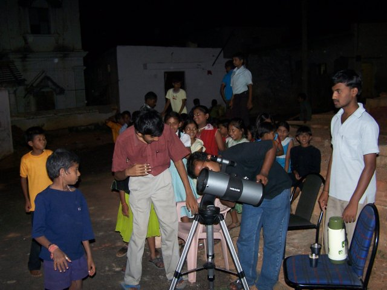

Outreach Session @ Sree Vani Vidyaniketan, Banasvadi.
By akarshsimha; Published 04 May 2007
The Bangalore Astronomical Society's "Astronomy @ Schools" programme made further advances with the succesful conduction of a skywatch followed up with a classroom session at Sree Vani Vidyaniketan school, Banasvadi on the 27th and 28th of April, 2007.
The school, run by the Rashtrotthana Parishat had more than 50 students gathered on Friday, 27th for the skywatch - part of the programme. The volunteers from our side included Myself, Akarsh and Naveen, and we were ably supported by the headmaster and the faculty of the school. The telescope was a 5" Meade short tube alt-az. The event started at around 6PM.
It was still daylight when the event began. Nevertheless, the moon offered views about as good as usaul. The sight of our nearest celestial neighbour in the eyepiece enthralled and evoked exclamations out of everybody. Questions came forth regarding the cratered surface and the maria and we dealt with them promptly. The queue never got shorter as many rejoined the queues for second looks.

Venus and Saturn were up next and both the planets offered good sights as always. Most children reported having been able to make out the gibbous phase of venus and saturn's rings even at low power. We also tried teaching them to learn to locate the same in the sky. By now, the event had been on for nearly two hours but the children were in no mood to leave. The egged us on further and we tried pointing the telescope to M35 but in vain. The cluster in gemini was completely washed out in the lighted up background. M41 too was confined to a similar fate and barely showed up in the eyepiece. We were forced to go at the sparsely populated beehive cluster (M44) in Cancer. The view wasn't anywhere as close to as good as one from the countryside but nonetheless, the children were astonished at the number of stars in eyepiece. The event concluded a while later.
The session on saturday began at 11:30 in the morning with a short discussion with the children on the objects observed
 the previous night. The children came up with interesting inputs on the moon craters, the maria and more. This was followed up with a questions and doubts session with Akarsh. Naveen took over at thus point and an interactive session on the solar system followed. The children enacted the solar system enacting the revolution of planets around the sun and the rotation around their own axis.
the previous night. The children came up with interesting inputs on the moon craters, the maria and more. This was followed up with a questions and doubts session with Akarsh. Naveen took over at thus point and an interactive session on the solar system followed. The children enacted the solar system enacting the revolution of planets around the sun and the rotation around their own axis.Naveen who 'directed' the little play managed to evoke frenzied participation and response to the play amogst the kids. While the play was educative with Naveen pitching in with various insights into planets, their physical properties, surface temperatures, size, orbital and rotational period and much more, The fun and interaction elements reigned potent at the same time. Asteroids, Kuiper belt objects, Comets - periodic and the ones from the oort cloud were also part of the play. The new classification of pluto as 'dwarf planet' was also dealt with appropriately. The session ended with a recap of all that had happened in the last two days.
The response to the event, the interaction with the children and the level of their enthusiasm has left us amidst heaps of satisfaction. The children left us off at the school's gate. We've promised to return again, sometime.